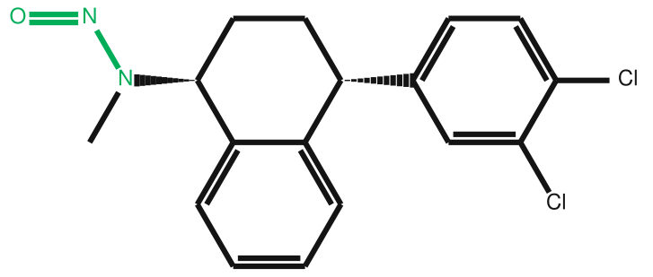
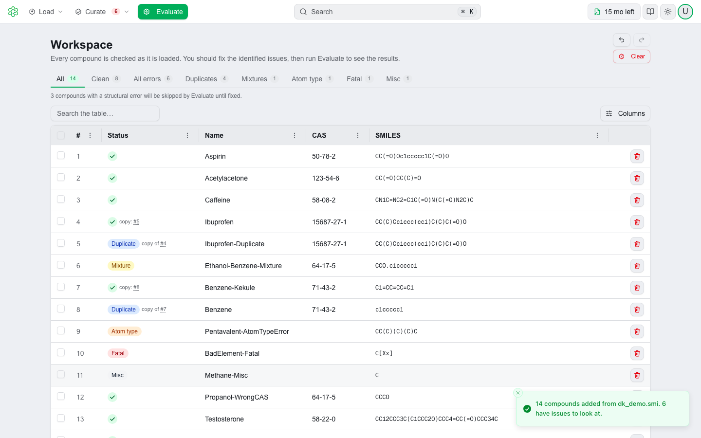

A new interface
For customers on QSAR Flex 3.x. Version 4.0 is a rebuilt desktop application with an entirely new interface, on Windows and now on macOS. The models, the endpoints and the results are the same.
In 4.0 the desktop application's interface is replaced with the one QSAR Flex uses on the web, wrapped in a native application for Windows and macOS. Nothing you have already done is affected: your account, your licence and your validated results carry over as they are.

Everything is in one bar. A single bar across the top carries Load and Curate on the left, a Search box in the middle, and Evaluate, your licence status, documentation and the theme on the right. An empty workspace offers its loading choices on a card instead.
Load, curate and evaluate on one table. Every compound is checked as it arrives and wears its verdict on the row. A panel on the left holds everything about one row, and ChemiGraphy opens from it to draw or correct a structure. Nothing moves between screens.
Search for the item you want. Press ⌘K or Ctrl K and type. The command bar searches every action in the product and runs it from wherever you are, naming where each control lives. It is the fastest way to find a feature you cannot see.

The interface is new. The chemistry underneath it is not. If you have validated a QSAR Flex result, 4.0 does not change it.
The interface in 4.0 is the one QSAR Flex has been running in the browser, and your licence covers it. Sign in at qsarflex.multicase.com with the same account: nothing to install, nothing to download, and it stays current on its own. It suits people who move between machines, or a colleague who needs occasional access without a deployment.
Two differences are worth knowing. The web application sends your structures to MultiCASE to be evaluated, where the desktop evaluates them on your own machine and sends none. And Surrogate Search and Cross Similarity are desktop-only, because they read across the whole reference database rather than fetching one record. If structures may not leave your network, stay on the desktop.
The installation guides, a walkthrough of the new interface and the full model catalogue are on resources.multicase.com. Anything else, open a ticket with the account you already use.